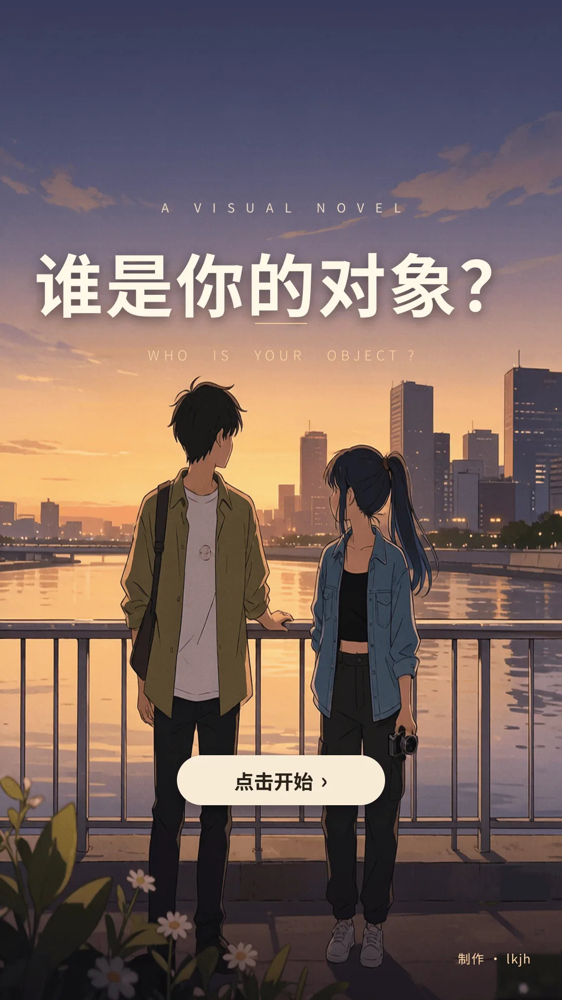

菜单
手机
证据
日志
设置
第一章：两个对象？
关系记录对不上
404
叙述
▼
加载记忆中。
证据
关系记录
关闭
记录
第一次判断
尚未获得证词。
周砚川
林夏
都有问题
先保留
日志
交互记录
关闭
已发生剧情
0 条
还没有新的交互记录。
获得证物
证物已贴进记录
新的证物已经加入证据页。
贴进记录
‹
异常聊天截图
•••
置顶聊天
备注：对象
昨天 21:17
对
今晚别忘了。你说过这次不许再临阵脱逃。
记录：备注是“对象”，但我对不上是哪一个人。
聊天
相册
通话